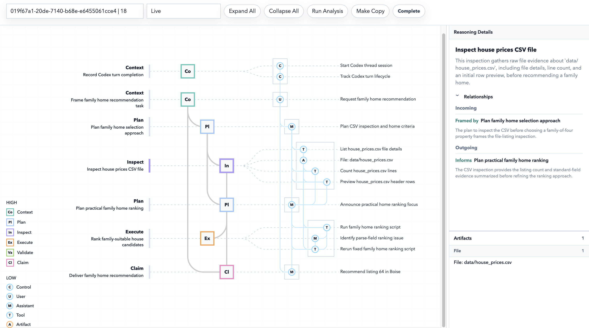
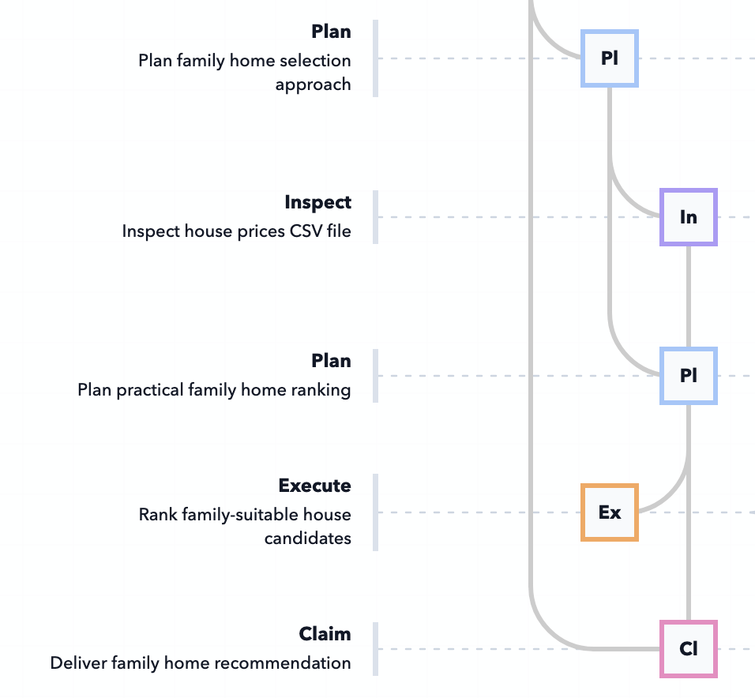
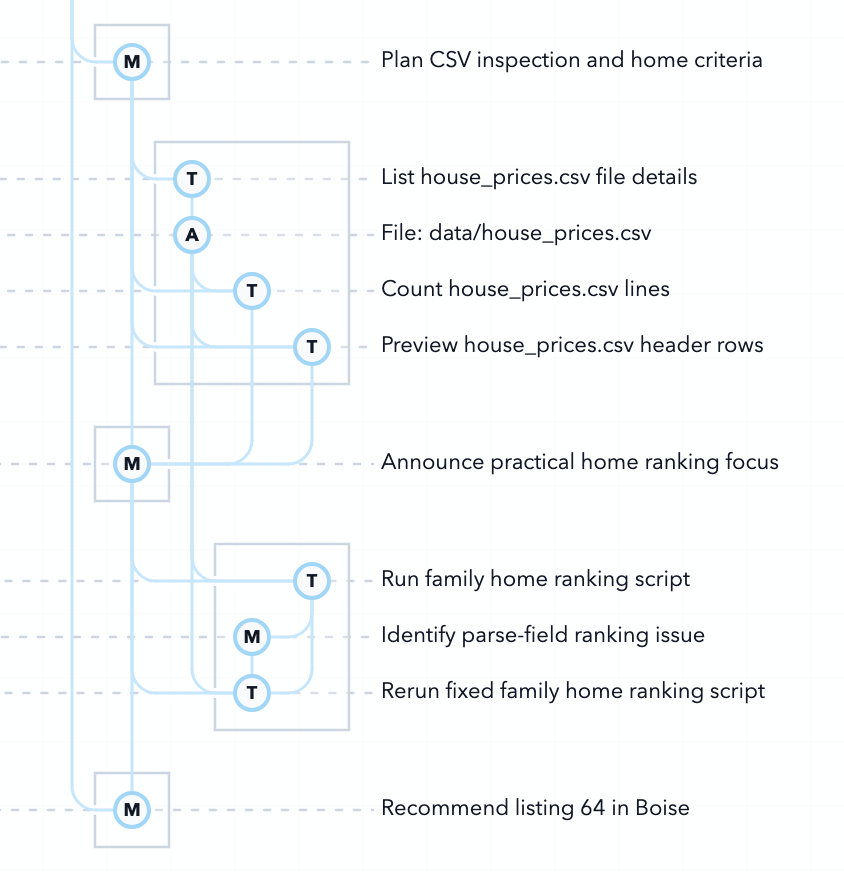
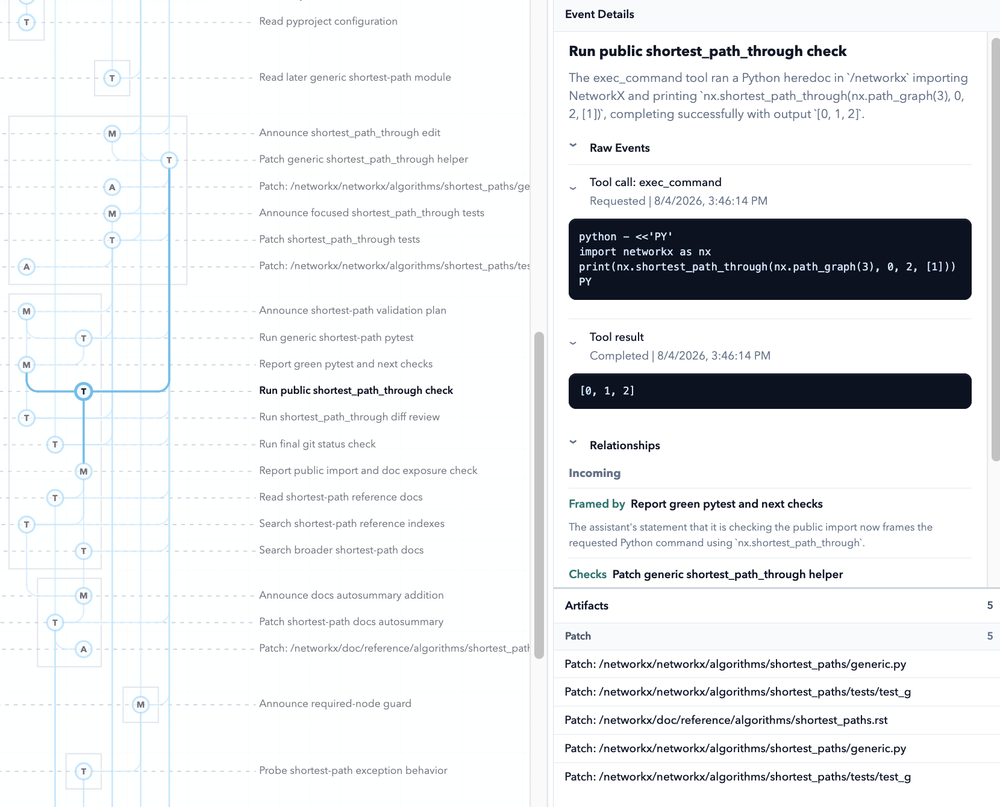
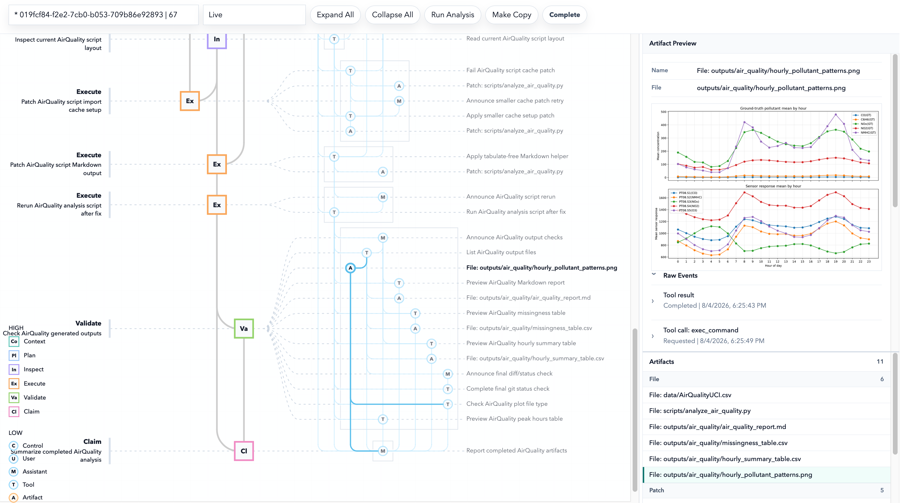

LEDGER is a tracing and review system for sessions run by LLM agents, developed during a summer internship at Lawrence Livermore National Laboratory. An agent session can include planning, file reads, code execution, edits, and generated tables or plots. Observability tools record these events, but a reviewer still has to work out which of them support the final answer. LEDGER runs next to an unmodified agent session and organizes the recorded events into a layered graph.

The lower level groups the recorded events into Evidence Nodes: messages, tool calls, and artifacts such as files, patches, and plots. The upper level groups Evidence Nodes into Workflow Nodes of six types: context, plan, inspect, execute, validate, and claim. Typed edges such as uses, produces, checked_by, and supports connect them, so a reviewer can start from a claim and follow the edges back to the actions and artifacts behind it.
The recorded events come from deterministic parsing of the session transcript. A separate tracer agent groups them into nodes and adds the edges, so the graph is an interpretation and can be incomplete or wrong.


Selecting an Evidence Node opens the recorded tool call, its result, its relations to other nodes, and the related artifacts. The graph works as an index into the recorded work, and the source records can be opened from it. Event and log views also show how the graph itself was built, which helps tell an agent error from a tracing error.

The system was tried on two sessions run in Codex, a data analysis task on an air-quality dataset and a feature addition to NetworkX. In the first, the trace shows a failed script run, the patch that repaired it, and the path from the final claim to the plot and tables it relies on. In the second, it separates the first implementation from a guard added later and records which test run covered which behavior.
